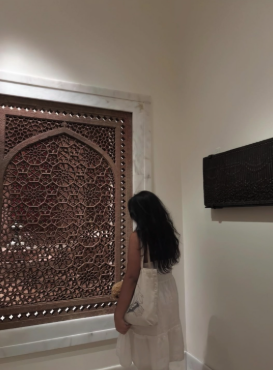

ABOUT ME! :)
Introduction
“Hello! My name is Mirian Menchu and I am 16 years old. I am currently attending Thomas A.Edison and I am in my Junior year of High School.
I attend Thomas A.Edison for their web development program which I am currently taking at the moment. I enjoy being creative and collaborative with
people because it is so much fun connecting with people and making even more connections through them! ”
Fun facts about me!
I was in the volleyball team

Best Highlight about my life was getting into the volleyball team because I made so many new friends and through the team I made even more
connections with people who also loved volleyball. Spending time with people doing something we loved really made this the highlight of my Junior Year.
About Volleyball:
- I was an Outside Hitter
- I played some offical and unoffical games
- Made new incredible friends that I now play with everyday after school
- I am hoping to get right side hitter next year!
I have a cat named Pudding!:

Pudding is my entire world. She is only 8 months old and she is a calico cat that is not only fiesty but also a little fat.
She loves eating and playing around with her toy mouses. Everday she gives me a reason to smile because she is such a cute and funny cat.
Her cuddles are the best espcially when she sleeps with her hello kitty blanket, it genuienly warms my heart.
Facts about pudding:
- Her birthday is on April 28th
- Her favorite food is chicken
- She has a heart shaped mark on the right side of her body
- She has really pink paws!
Few things I really enjoy:

There are a lot of things that make me happy, whether it be the for the most biggest or smallest things. I am a very simple
person who tries to find creativity anywhere. I am out going when I choose to be but I can also stay quiet and enjoy my peace
on my own. Here are some things I think stand out about me the most-
Facts:
- I love going to museums
- I love reading
- I love listening to music
- I have joined multiple clubs this year! I hope one day I can have a role in a club
- Fun fact about me I used to edit videos and till this day i quite enjoy it